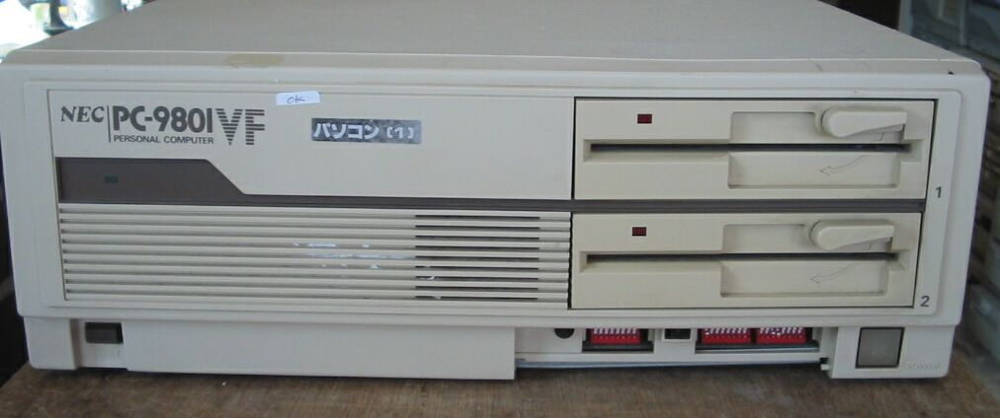
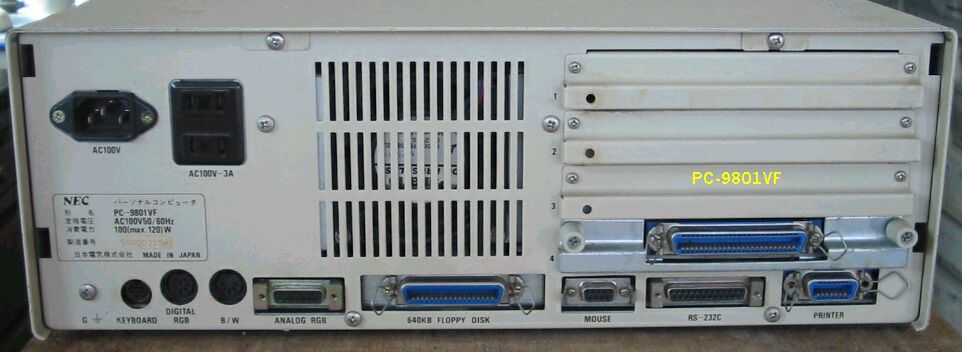
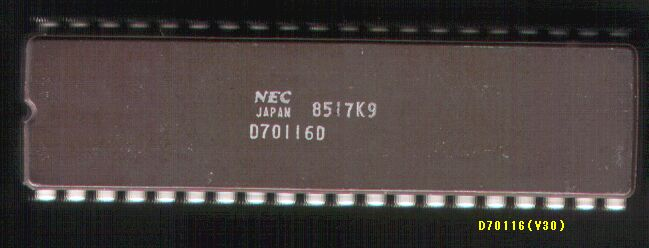

PC9801ＶＦ２
PC-9801VFの前面

PC-9801VFの背面

このPC9801VF2は1985年7月発売で、主な仕様は次のようなものです。
型 名 ：PC-9801VF2
価 格 ：348000
発表日 ：85/07
出荷日 ：85/07
CPUクロック ： V30 8MHz
ROM ： N88-BASIC(86)及びモニタ96KB
標準RAM ： 256KB
最大ユーザーズメモリ ： 640KB
グラフィックVRAM容量 ： 192KB
グラフィックVRAM画素数： 640*400
グラフィックVRAM色数 ： 4096色中8色2画面(PC-9801-24使用時16色)
サウンドVRAM ：
テキストVRAM ： 12KB
拡張スロット数 ： 4
拡張スロット電源容量 + 5V ：0.5A
+12V ：0.06A
-12V ：0.07A
標準実装ドライブ FDD ：5インチ640KBFDD2-DRIVE FD1055D使用
内蔵インタフェースコネクタ：640KBFDDI/F プリンタI/F RS-232CI/F
：マウスI/F B/WCRTI/F デジタルCRTI/F
：アナログCRTI/F
漢字 ：標準:第一、第二オプション:拡張
9801Fと同時に、ハードオフで\200で購入しました。640KB-FDDの具合が悪く、カバーをあけてみると、A ドライブのヘッドに 紙切れがはさまっており、さらにヘッドのシールドが脱落していました。古い９８の５インチFDDは、必ずと言っていい
ほど、シールドの脱落が起こります。B ドライブもシールド脱落。シールドをを取り除きましたが、やはりA、Bとも回復せず 、FDを読めないので、CバスにSCSIボードLHA15Hを刺し、NEC純正40MB-HDDのDOS5.0から起動しました。ビデオもダメで 赤みがかった色になりますが、一応動作は確認できました。
(2002/12/18記)
写真のPC-9801VFは最近手に入れた別なものです。動作は良好です。 (2004/04/20記)

PC9801VFに使われていた日本電気製CPUμPD70116（Ｖ３０）
PC9801のページに戻る